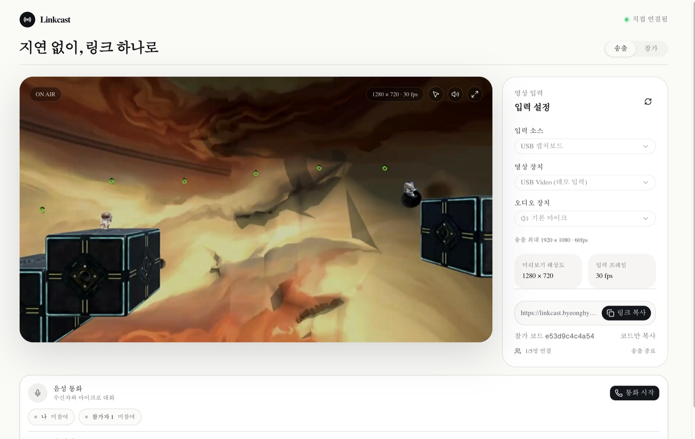
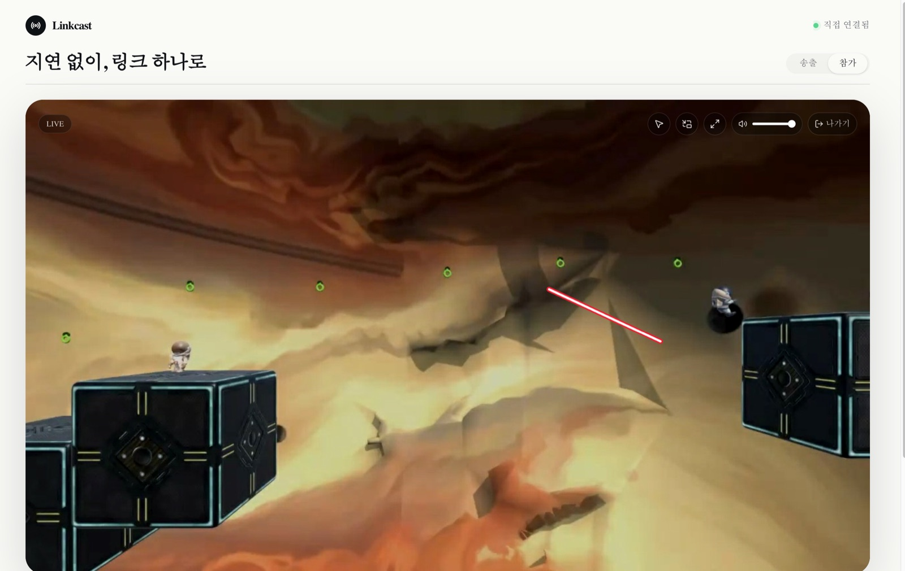

콘솔·PC 화면을 링크 하나로 최대 5명과 함께 봅니다
USB 캡처보드나 화면 공유로 입력한 화면을 브라우저에서 바로 송출하는 소규모 실시간 방송 서비스입니다. 참가자는 설치 없이 링크를 열어 보고, 모두가 음성으로 대화하며 화면을 가리킬 수 있습니다.
- 역할
- 개인 프로젝트
- 최대 송출
- 1080p · 60fps
- 참가 인원
- 송출자 + 최대 5명

사용 방법
친구 몇 명에게 게임 화면을 보여 주고 싶을 때, 설치 없이 브라우저에서 링크만 열면 되는 가벼운 방송을 목표로 만들었습니다.

송출자
- 입력 소스 선택USB 캡처보드 또는 화면 공유(프로그램 창·전체 화면·탭)를 고릅니다.
- 링크 만들고 복사미리보기를 확인한 뒤 링크나 참가 코드를 공유합니다.
- 송출 종료버튼을 누르거나 브라우저에서 화면 공유를 멈추면 끝납니다.
참가자
- 링크 열기 또는 코드 입력모바일 브라우저에서도 시청할 수 있습니다.
- 음량 · 전체화면 · PiP포인터 버튼으로 레이저 모드를 켜고 끕니다.
- 통화 시작대화하려면 각자 통화 시작을 눌러 마이크를 켭니다.
주요 기능
최대 1080p 60fps 송출
입력에는 최대 4K 60fps를 요청해 미리보기는 원본 해상도를 유지하고, WebRTC 인코더에만 축소 비율과 60fps 상한을 걸어 원본 비율 그대로 1080p 안에 맞춥니다.
레이저 모드
클릭·터치 드래그로 포인터를 공유합니다. 송출자는 전체화면에서도 참가자가 보낸 포인터를 항상 볼 수 있습니다.
모두가 함께하는 음성 통화
송출자와 참가자뿐 아니라 참가자끼리도 음성으로 연결됩니다. 영상과 별개로 각자 통화에 참여합니다.
브라우저별 전체화면
기본은 브라우저 전체화면, 모바일 Safari는 네이티브 영상 전체화면을 쓰고, 지원하지 않으면 화면 영역을 채우는 방식으로 바꿉니다.
연결 복구
참가자별 연결 복구와 WebSocket 재접속을 지원하고, 영상 트랙이 활성화되지 않으면 연결을 다시 맺습니다.
설정 기억
선택한 입력 장치와 음량 설정을 저장해 다음 송출 때 다시 고르지 않아도 됩니다.
연결 구조
영상·입력 소리·통화 음성은 서버를 거치지 않고 WebRTC P2P로 사용자끼리 직접 전달됩니다. Cloudflare Durable Object는 방 입장과 연결 신호만 관리하며 영상을 저장하거나 중계하지 않습니다.
시그널링. 방 이름마다 Durable Object 하나가 WebSocket으로 방 입장과 WebRTC 연결 신호를 주고받게 합니다. 영상 데이터는 서버에 남지 않습니다.
트랙 처리. 수신 트랙이 오디오와 비디오 순서로 따로 도착해도 새 스트림을 화면에 반영하고, 브라우저 자동 재생이 막히면 재생 버튼으로 다시 시도할 수 있게 했습니다.
현재 제한. ICE 설정은 STUN만 사용하고 TURN 중계 서버는 쓰지 않습니다. 통신사망이나 공유기의 NAT·방화벽이 직접 연결을 막으면 접속에 실패할 수 있어, 안정적인 셀룰러 접속에는 TURN 설정이 필요합니다. 녹화와 다시보기 기능은 없습니다.
지금 바로 링크를 만들어 보세요
데스크톱 브라우저에서 송출하고, 모바일에서도 시청할 수 있습니다.